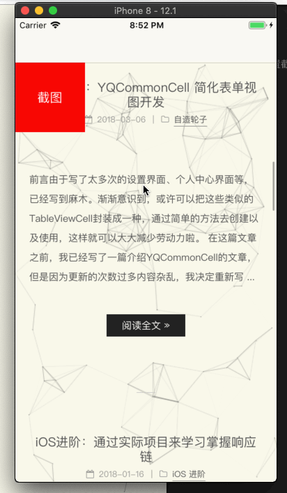
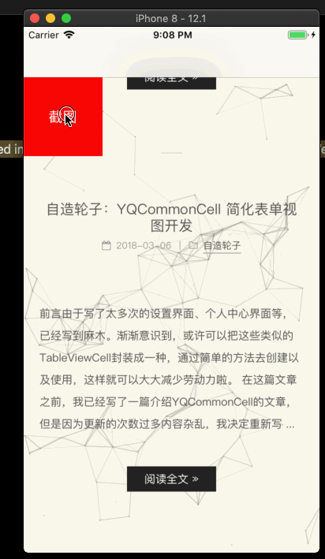
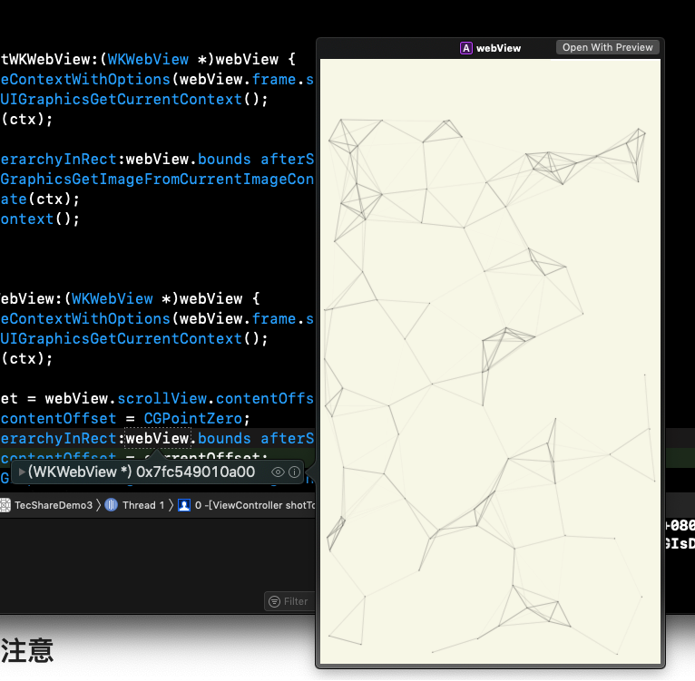
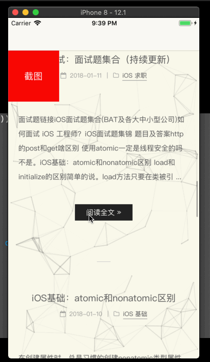

最近，在做网页截图需求时，发现了一个坑。
产品的要求是客户端可以随时截取网页置顶时的图片，即使当前的网页已经滑到底部了。然而，在实现的时候，发现UIWevView是可以实现的，而WKWebView则会出现截屏为空白或者一部分为空白的问题。
不着急，在说解决方案之前，我先把网页截图相关的需求都记录一边，需要的可以自取哈。
WebView的当前位置截图实现
UIWebView
虽然现在UIWebView已经被苹果废弃，但是考虑到很多app还有在用，因此也一起记录一下。
1 | - (UIImage *)shotCurrentUIWebView:(UIWebView *)webView { |
WKWebView
WKWebView是苹果在iOS 8之后推出的框架WebKit中的浏览器控件, 其加载速度比UIWebView快了许多, 但内存占用率却下降很多, 也解决了加载网页时的内存泄露问题。然而，事情并没有这么简单。。。
不过，当前位置的网页截屏还是可以用UIWebView那一套的，因此不重复写。
WebView的置顶位置截图实现
首先再明确一下需求，即使当前网页已经滚动到最底部，都要截取置顶时的网页，同时让用户无感知。
UIWebView
首先还是UIWebView的实现，UIWebView的实现比较简单，你第一时间想到的方案就是实现的方案。
具体思路是，当需要截图时，先保存当前网页的偏移量contentOffset，然后将网页置顶，使用上面的方法截图，然后设置网页刚保存的偏移量。
根据思路，代码如下：
1 | - (UIImage *)shotTopUIWebView:(UIWebView *)webView { |
效果如下：
demo中点击截图按钮后，会调用
-(UIImage *)shotTopUIWebView:(UIWebView *)webView方法截取顶部图片，同时push到下一个控制器中，使用UIImageView展示出来。

WKWebView
UIWebView的实现比较简单，都是在主线程中同步完成。
下面尝试用同样的方法实现WKWebView的置顶截图。然而，发现效果和想象的不太一样：（我在第一个界面出现的时候延迟两秒进行了loadRequest处理）

发现如果网页只是往下花了一点，会截取一部分网页，如果偏移量比较大，截图全是空白。
为了解决这个问题，我上网查了下，网上推荐使用-(BOOL)drawViewHierarchyInRect:(CGRect)rect afterScreenUpdates:(BOOL)afterUpdates NS_AVAILABLE_IOS(7_0);方法，看方法名貌似可以实现，但是还是没有解决。
然后我开始猜测，是不是在网页还没滚动到顶部的时候，就已经开始截图，或者说在截图的时候，网页还没绘制完毕。
我在截屏的那行代码处打了断点，然后预览滚动到顶部后的网页，发现：

果然是网页没有绘制完毕。
那么要解决这个问题，就得做个延时处理，比方说，设置网页置顶后，延时0.1秒截图。但是一旦这个做，用户就能感知到网页置顶了。有什么办法能让用户无感知的置顶然后延时截图呢？
方法就是在置顶之前，先在网页上放一个和当前网页一模一样的界面欺骗用户，然后置顶网页，延时截图，截完图后回归位置，然后移除顶部的视图。
按照逻辑，代码如下：
1 | - (void)shotTopWKWebView:(WKWebView *)webView compete:(void (^)(UIImage *shotImage))compete { |
效果如下：（为了更好的展现问题，我在截取到图片后，延迟3秒再push下一界面）

很明显，截图后，界面闪了一下，原因是[tmpView removeFromSuperview];。
解决方法：延迟0.1秒后移除。
1 | - (void)shotTopWKWebView:(WKWebView *)webView compete:(void (^)(UIImage *shotImage))compete { |
一劳永逸
1 | typedef NS_ENUM(NSInteger, WebViewShotType) { |